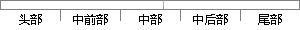

如果任务需要延时1秒，那么延时的节拍数即为10。
片段位置图

相似结果
相似片段：如果设置时钟节拍率是10(意思是1秒10次中断,即100ms). 那么OSTimeDly(100) 就是延时10秒。 还有时钟节拍数要小于65536 回答者: Feirui007 - 一级 2010-7-...
| 标题 | 《...延时可为多少?可为50us吗?如何配置实现最小延时的?_..._百度知道》 |
| 对比库 | PaperRater云论文库 |
| 网址 | http://zhidao.baidu.com/link?url=LWH1tlO1PXYAkEF87msJjVhEPxv1urU01yjbLQEahWRRnpyh9UhCaL9u5bkUHSgYf4KaOrohSpTF9dsKkNb2eq |
| 相似率 | 70% （轻度抄袭） |
※ 片段修改建议 ※
近似词参考：- 需要：必要
- 节拍：节奏
- 任务：使命 义务
- 如果：若是 假如 要是
- 那么：那末
系统自动生成语句：若是使命必要延时1秒，那末延时的节奏数即为10。
注：本片段修改建议为系统自动生成，仅供参考。